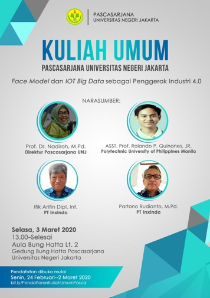

Page 1Page 2

Date: Tuesday, March 3rd 2020
Name of Event: General Study of “Face Model and IOT Big Data as an Industry Activator 4.0”
The Speakers:
Date: Tuesday, March 10th 2020
Name of Event: National Seminar of “Merdeka Belajar: in Achieving Advanced Indonesia 2024”
Keynote Speakers: Nadim Anwar Makarim, B.A., M.B.A (Ministry of Education and Culture)
The Speakers:
Date: Wednesday, July 2nd 2020
Name of Event: Journal Management Assistance “Index Scopus Strategy and The Improvement of Journal Management International reputed”
The Speakers:
Date: Tuesday, July 21th 2020
Name of Event: Workshop of Article Writing about “The Right Way to Write An Article through Scopus Indexed Journals”
The Speakers:
Date: Saturday, July 18th 2020
Name of Event: Seminar of Language and Its Learning in New Normal Era
The Speakers:
Date: Thursday, July 16th 2020
Name of Event: A Workshop of “International Accreditation Preparation, Post-graduate UNJ”
The Speakers:
Date: Wednesday - Thursday, August 12-13th 2020
Name of Event: A Workshop of “The Continuing of AQAS document submission Preparation”
The Speakers:
Date: Saturday, August 1st 2020
Name of Event: Seminar of “Saturday with Professor” Critical Literacy in Discourse and Literature
The Speakers:
Date: Friday - Sunday, September 18-20th 2020
Name of Event: A Workshop of AQAS Document Arrangement in the 2nd Stage about Application Writing
The Speaker:
Date: Thursday-Friday, October 15-16th 2020
Name of Event: Online Conference of The 2nd ICELS
The Speakers:
Date: October 15th-22nd 2020
Name of Event: Periodic Monitoring of Internal ISO SNI 210001:2018
The Speakers:
Date: October 15th-22nd 2020
Name of Event: Internal Audit of Master and Doctor Program, Post-graduate
The Speakers:
Date: Thursday, October 15th 2020
Name of Event: Seminar of “Ngopi” Master Program in Physical Education
The Speaker:
Date: Wednesday-Thursday, October 21st-22nd 2020
Name of Event: A workshop of the arrangement of AQAS Document, the 4th stage
The Speaker:
Date: Wednesday, October 11th 2020
Name of Event: Initial Audit & Verify Conformity and Effectiveness of ISO 210001:2018 Standard
The Speakers:
Date: Thursday, November 19th 2020
Name of Event: Initial Consultation Online Workshop
The Speaker:
Date: Saturday, July 24th 2021
Name of Event: Training of Mendeley
The Speaker:
Date: Saturday, October 31st 2020
Name of Event: Seminar of “Saturday with Professor” The latest Linguistic and Its application for Language Learning
The Speakers:
Date: Sunday, September 20th 2020
Name of Event: Application of Mendeley, Publish or Perish, and Turnitin
The Speaker:
Date: Saturday, October 3rd 2020
Name of Event: Linguistic Training of Corpus
The Speakers: